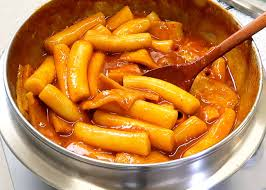

Teobokki

Teobokki is made of rice cake (The rice cake can also be replaced with flour, which I prefer), chili paste and fish cakes.
According to your preference, you can add some cheese, eggs, other types of noodle and etc.
Ingredients
- Rice cakes
- Fish cakes
- Gochujang (Chili paste)
- Scallions
- Soy sauce
- minced garlic
Steps
- Soak the rice cakes in warm water
- Mix the sauce in a bowl (Gochujang, sugar, soy sauce, minced garlic)
- Boil the mixed sauce in a pot. Once the sauce is boiling, add the race cakes, fish cakes and scallions for 5 minutes.
- Ready to eat! ;)